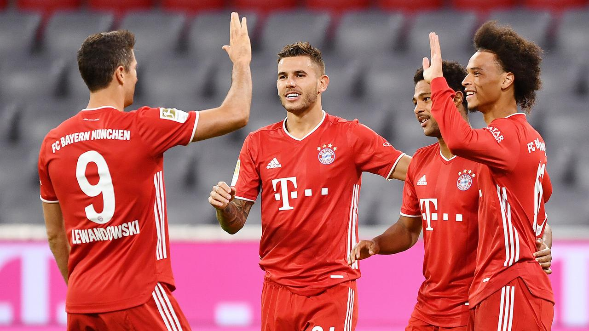

Final Score: Bayern Munich 8-0 FC Schalke
After winning the treble the previous season, Bayern Munich opened up their domestic season against Schalke. Let’s keep it short: Bayern dominated, as the scoreline shows. Here are five key takeaways:
1. Leroy Sane Is A Great Fit
In his first game for Bayern Munich, Leroy Sane looked fantastic. He had a goal and had a revamped energy which we have not seen in a while due to his injuries. With Robert Lewandowski and Serge Gnabry, Bayern’s front three is formidable. They can only get better, as Sane is a major upgrade from Ivan Perisic and Kingsley Coman. Also, when Alphonso Davies is slotted back into the lineup, Bayern’s left side is going to be extremely difficult to stop. Sane fits great into the system and makes their attack much better.
2. Serge Gnabry Is A Machine
Gnabry slotted a hat trick today and after finding his place in the Bayern starting lineup last year, he will just keep on scoring. He is fast, strong, and has a very high soccer IQ, and it is very hard to tell whether he is going to pass or shoot when he is by the goal. Gnabry is not showing signs of slowing down anytime soon.
3. Weston McKennie Will Be Missed
Weston McKennie completed his move to Juventus last week, and the midfield for Schalke felt very different without him. Even though it’s Bayern, Schalke’s center mids did not look up to par, as Nabil Bentaleb and Suat Serdar were constantly picked on whenever the ball was around them. Last year, McKennie was producing at a high level and Schalke will have a different look without him.
4. Thiago Alcantara’s Gap Was Easily Filled
Yesterday, Thiago completed his $20M move to Liverpool, and the former starting center midfielder for Bayern was not missed. Joshua Kimmich took his spot and played an almost flawless match, and Kimmich will be seeing much more of this role this season instead of rightback. Thiago is an elite player and he will fit in at Liverpool, but his absence was not felt today.
5. Bayern Are The Best Team In The World, And There Is No Argument
There is not a team that can match up with Bayern Munich right now. They have Manuel Neuer, who many thought had lost a step but has been at the top of his game lately, a defense that has been almost impossible to beat (including Alphonso Davies), holding the likes of Lionel Messi, Neymar, and Kylian Mbappe, a center mid that bullies players off the ball, two wingers that are fast and elite in open space, and the 2020 Ballon D’Or winner (if there was one). They are coming off of a treble season, look sharp, and look like they want to win every game that they play, especially in the Bundesliga. Invincibles anyone?
